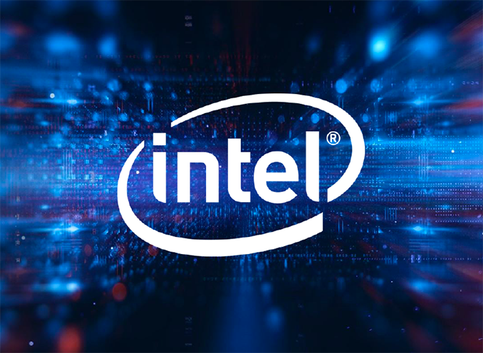

{% extends "base.html" %}
{% block current_app_content %}
    <h1>Intel 十代 Core 正式登場！最高 10 核心‧5.3GHz Turbo 時脈</h1>
    <br>
    
    <br>
    <h3><a><font color="#000000">Intel 主流桌面 (Mainstream Desktop) 第十代 Core 處理器，代號「Comet Lake-S」，終於在香港時間 4 月 30 日 9pm
        全球正式公布，LGA1,200 插座新世代來了！Comet Lake-S 最高 10 核心、14nm+++ 改良版製程、配以全新 400 系列晶片等。根據 Intel 規定，暫時全球媒體只能透露第十代 Core
        平台的技術細節，待到香港時間 5 月 20 日 9pm 後才可公開效能數據，產品亦於當天全球上市！</font></a><br>
        <br>
        <li>最高 10 核心、5.3GHz，14nm+++ 製程</li>
        <li>全部具備 HT 超綫程，Core i3 也有 4C/8T</li>
        <li>LGA1,200 新封裝，改用 400 系晶片主機板</li>
        <br>
        <a><font color="#000000">根據消息人士指出，Samsung 現時已經完成了 1.5 億像素感光元件，預計今年下半年就可以量產使用，小米、Oppo 和 Vivo 預計也會採用，但傳聞指 Galaxy
            Note 20 和 Galaxy Fold 2 仍會採用 1.08 億像素感光元件。而 Samsung 的下一步就是開發 2.5 億像素感光元件，感光元件將增大至 1 吋，大幅提升吸光能力，使影像更清晰細緻，比起
            6,400 萬像素感光元件的 1/1.72 吋、1.08 億像素感光元件的 1/1.33 吋大不少，不過鏡頭的大小和厚度估計也會相對增加。來年的 Samsung Galaxy S21 很大機會是首部 2.5
            億拍攝像素手機，大家會否期待呢？
            <br>
            <br>
        </font></a>
        <br><br>
        <a href="{{ url_for('main.winup') }}"><font color="#9966ff">{{ _('【相關報道】微軟推 Win 10 更新 大幅提升硬碟效能') }}</font></a>
        <br>
        <a href="{{ url_for('main.ipxs') }}"><font
                color="#9966ff">{{ _('【相關報道】Apple iPhone XS 勁劈至 HK＄3899！抵玩過 iPhone SE？') }}</font></a></h3>
{% endblock %}